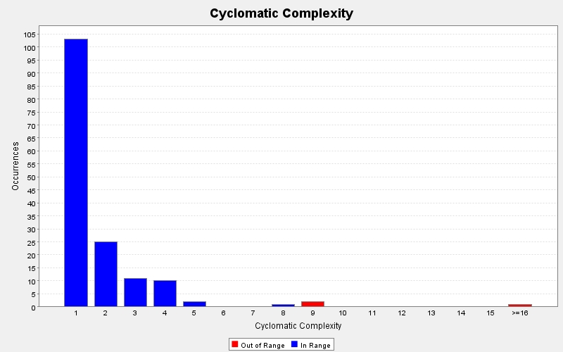

Produced by State Of Flow Eclipse Metrics on Sun Apr 14 20:24:37 EDT 2013
|  |
|
| CC (max) |
FE (max) |
LOCm (max) |
NLS (max) |
NOL (max) |
NOP (max) |
NOS (max) |
Ce | LCOM-CK | LCOM-HS % | LCOM-PFI % | LCOM-TC % | NOF | WMC | Line | Type | Package |
|---|---|---|---|---|---|---|---|---|---|---|---|---|---|---|---|---|
| 38 | 2 | 200 | 2 | 6 | 1 | 150 | 61 | 0 | 92 | 76 | 2728 | 42 | 73 | 69 | TwitterGUI | view |
| 9 | 0 | 55 | 4 | 4 | 2 | 59 | 27 | 277 | 94 | 81 | 324 | 19 | 63 | 26 | TwitterModel | model |
| 5 | 0 | 109 | 20 | 4 | 2 | 82 | 26 | 0 | 73 | 51 | 856 | 6 | 19 | 27 | ProfilePanel | view |
| 4 | 0 | 18 | 2 | 3 | 1 | 12 | 10 | 0 | 44 | 78 | 0 | 2 | 15 | 16 | Tweets | model |
| 4 | 0 | 22 | 1 | 4 | 2 | 25 | 9 | 0 | 25 | 45 | 0 | 2 | 19 | 18 | Users | model |
| 4 | 0 | - | 1 | 3 | 1 | 10 | 6 | - | - | - | - | 0 | 4 | 352 | TwitterGUI$(anonymous) | view |
| 3 | 0 | 24 | 4 | 3 | 2 | 16 | 30 | 14 | 79 | 85 | 237 | 6 | 52 | 34 | TwitterController | controller |
| 3 | 0 | 31 | 0 | 3 | 2 | 13 | 14 | 0 | 67 | 47 | 392 | 6 | 5 | 21 | DialogTweets | view |
| 3 | 2 | - | 0 | 3 | 1 | 9 | 3 | - | - | - | - | 0 | 3 | 338 | TwitterGUI$(anonymous) | view |
| 2 | - | 19 | 0 | 2 | 1 | 9 | 7 | - | - | - | - | 0 | 1 | 12 | GUITest | test |
| 2 | 0 | 35 | 0 | 2 | 1 | 22 | 12 | 0 | 25 | 25 | 0 | 3 | 4 | 17 | LoadingPanel | view |
| 2 | 1 | - | 2 | 2 | 5 | 7 | 10 | - | - | - | - | 0 | 2 | 435 | TwitterGUI$(anonymous) | view |
| 2 | 1 | - | 2 | 2 | 5 | 7 | 10 | - | - | - | - | 0 | 2 | 529 | TwitterGUI$(anonymous) | view |
| 2 | 1 | - | 2 | 2 | 5 | 7 | 10 | - | - | - | - | 0 | 2 | 970 | TwitterGUI$(anonymous) | view |
| 1 | 0 | 6 | 0 | 1 | 0 | 6 | 5 | 0 | 33 | 44 | 0 | 3 | 3 | 23 | ControllerTest | test |
| 1 | - | - | 0 | 1 | 1 | 1 | 2 | - | - | - | - | 0 | 1 | 26 | GUITest$(anonymous) | test |
| 1 | 2 | - | 0 | 1 | 1 | 6 | 3 | - | - | - | - | 0 | 1 | 92 | ProfilePanel$(anonymous) | view |
| 1 | 1 | - | 0 | 1 | 1 | 1 | 2 | - | - | - | - | 0 | 1 | 396 | TwitterGUI$(anonymous) | view |
| 1 | 1 | - | 0 | 1 | 1 | 1 | 2 | - | - | - | - | 0 | 1 | 490 | TwitterGUI$(anonymous) | view |
| 1 | 1 | - | 0 | 1 | 1 | 1 | 2 | - | - | - | - | 0 | 1 | 609 | TwitterGUI$(anonymous) | view |
| 1 | 1 | - | 0 | 1 | 1 | 1 | 2 | - | - | - | - | 0 | 1 | 742 | TwitterGUI$(anonymous) | view |
| 1 | 1 | - | 0 | 1 | 1 | 1 | 2 | - | - | - | - | 0 | 1 | 801 | TwitterGUI$(anonymous) | view |
| 1 | 5 | - | 0 | 1 | 1 | 46 | 10 | - | - | - | - | 0 | 2 | 841 | TwitterGUI$(anonymous) | view |
| 1 | 1 | - | 0 | 1 | 1 | 1 | 2 | - | - | - | - | 0 | 1 | 940 | TwitterGUI$(anonymous) | view |
Produced by State Of Flow Eclipse Metrics on Sun Apr 14 20:24:37 EDT 2013